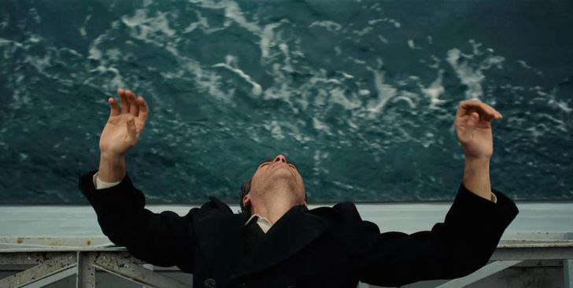
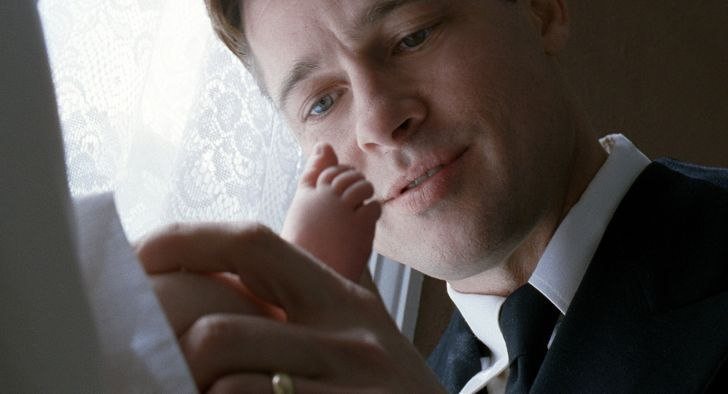
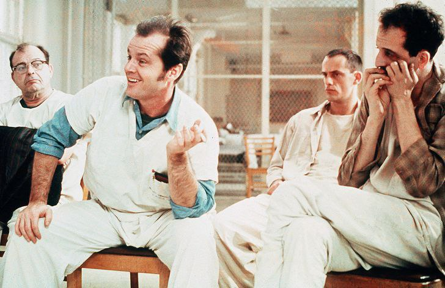
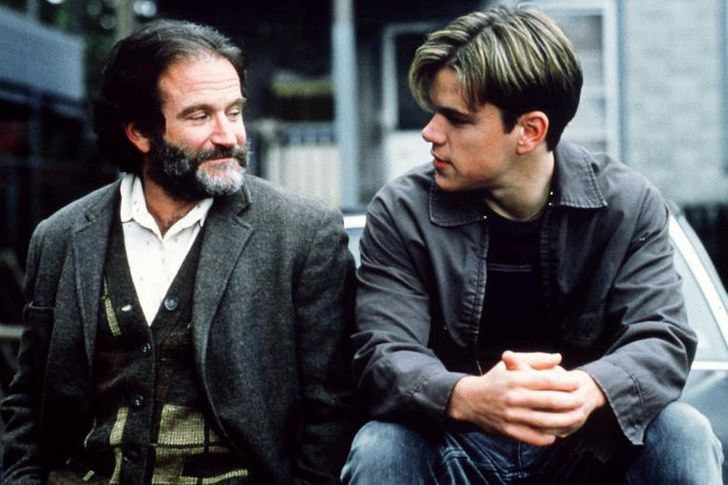
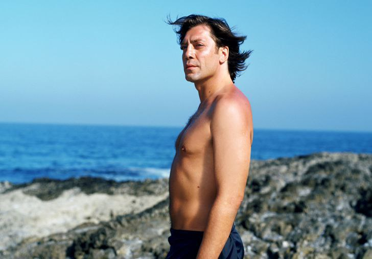

|  | Это исключительное кино о силе человеской харизмы и внушения, к которому можно применить множество эпитетов. Но главная его особенность в том, что он "работает" со зрителем сразу же на нескольких уровнях восприятия. С помощью прекрасно выверенной постановки и мощных актерских образов фильм будоражит самые глубокие уровни зрительского подсознания, вызывая одновременно и отвращение, и сильное сопереживание, и желание его пересмотреть. Вы сами поймете почему. |
| Это картина, безжалостно обнажающая человеческую сущность с психологической точки зрения и открывающая глаза на трудности, от которых большинство из нас просто пытается скрываться. Фильм, у руля которого стоит сам Дэвид Кроненберг, а в команде отметились небезызвестные Майкл Фассбендер, Вигго Мортенсен, Кира Найтли и Венсан Кассель, понравится всем, у кого при упоми |
|  | Самый загадочный американский режиссер Терренс Малик снял кино, затрагивающее духовно-чувственную сторону человеческого бытия. Пытаясь объединить макрокосм и микрокосм, с помощью музыки и видеоряда автор отображает течение жизни - от ее возникновения, "начала" времен, и до жизни конкретной среднестатистической американской семьи середины XX века. Отдельного внимания заслуживают удивительные картины зарождения Вселенной |
|  | Этот фильм - один из немногих, что был воспринят на ура и критиками, и профессионалами, и массовой аудиторией. Несмотря на все очарование, картина значительно отличается от книги, послужившей основой для экранизации. Но основную мысль режиссер Милош Форман сохранил: многочисленные людские проблемы можно решить, если только приложить усилия, а не сидеть сложа руки. Что и демонстрирует главный герой фильма Макмерфи. |
|  | Умница Уилл Хантинг» — достойный чувственный фильм, который вызывает целую палитру эмоций - смех, печаль, слезы и смех сквозь слезы. В историю про потерявшегося в жизни гения режиссер Гас Ван Сент и сценаристы Бен Аффлек и Мэтт Деймон вложили всю душу. Был продуман каждый диалог. Поэтому после просмотра фильма остаются очень необычные ощущения на душе и в сердце. |
|  | Это одна из тех кинолент, которые непременно нужно посмотреть. Во многом из-за блистательной игры Хавьера Бардема. Кто-то будет восхищаться главным героем, кто-то сочувствовать, а кто-то и осуждать, но каждый наверняка найдет в этом фильме что-то свое. «Море внутри» — красивое, глубокое и неторопливое кино. И ощущения после просмотра подобны прыжку со скалы в море. Что-то тяжелое, как будто обруч, сдавливает грудь, и становится трудно дышать. А после на губах появляется вкус соли… |